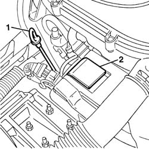
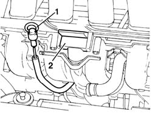
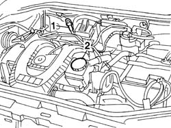
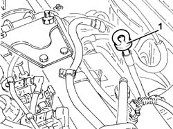
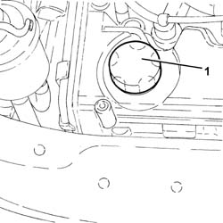
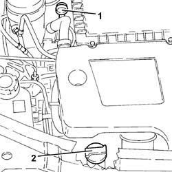
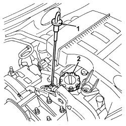

0010T11 engine oil check level and top up
- Path
- Procedures > 00 MAINTENANCE > 0010 NEW VEHICLES AND MAINTENANCE > 0010T VEHICLE FLUIDS > 0010T11 engine oil check level and top up
- Kind
- repair procedure (removal / refitting; the operation number is the code)
- Applies to
- all engines; all production periods
- Interactive page
- https://sloeber94.github.io/elrnDB-fDbl/en/#/2584120
Applies to: engines: 1.2 8v; all production periods
1. Check that the engine oil level is between the MIN and MAX marks on the dipstick.
2. If necessary, top up the level by introducing the recommended fluid after having removed the cap.
Type | Component | Description | Qty. | |
|---|---|---|---|---|
- | Oil | ENGINE LUBRICATION SYSTEM | SELENIA 20K | - |
For the optimum operation of the engine in particularly harsh climate conditions (temperatures below -20°C) use the recommended oil for the engine lubrication circuit.
Type | Component | Description | Qty. | |
|---|---|---|---|---|
- | Oil | ENGINE LUBRICATION SYSTEM | SELENIA PERFORMER | - |

Applies to: engines: 1.2 8v; all production periods
Fit the cap.
Start up the engine and keep it idling for a few minutes.
Switch off the engine and wait for a few minutes.
Check the oil level again, then insert the dipstick properly in its housing.
Applies to: engines: 1.6 16v; all production periods
1. Check that the engine oil level is between the MIN and MAX marks on the dipstick.
2. If necessary, top up the level by introducing the recommended fluid after having removed the cap.
Type | Component | Description | Qty. | |
|---|---|---|---|---|
- | Oil [l] | ENGINE LUBRICATION SYSTEM | SELENIA 20K | - |
For the optimum operation of the engine in particularly harsh climate conditions (temperatures below -20°C) use the recommended oil for the engine lubrication circuit.
Type | Component | Description | Qty. | |
|---|---|---|---|---|
- | Oil [l] | ENGINE LUBRICATION SYSTEM | SELENIA PERFORMER | - |

Applies to: engines: 1.6 16v; all production periods
Fit the cap.
Start up the engine and keep it idling for a few minutes.
Switch off the engine and wait for a few minutes.
Check the oil level again, then insert the dipstick properly in its housing.
Applies to: engines: 1.9 DIESEL; all production periods
1. Check that the engine oil level is between the MIN and MAX marks on the dipstick.
2. If necessary, top up the level by introducing the recommended fluid after having removed the cap.
Type | Component | Description | Qty. | |
|---|---|---|---|---|
- | Oil [l] | ENGINE LUBRICATION SYSTEM | SELENIA TURBO DIESEL | - |
For the optimum operation of the engine in particularly harsh climate conditions (temperatures below -15°C) use the recommended oil for the engine lubrication circuit.
Type | Component | Description | Qty. | |
|---|---|---|---|---|
- | Oil [l] | ENGINE LUBRICATION SYSTEM | SELENIA WR DIESEL | - |

Applies to: engines: 1.9 DIESEL; all production periods
Fit the cap.
Start up the engine and keep it idling for a few minutes.
Switch off the engine and wait for a few minutes.
Check the oil level again, then insert the dipstick properly in its housing.
Applies to: engines: 1.2 8v, 1.6 16v, 1.3 JTD 16V, 1.9 JTD 8V, 1.9 DIESEL; all production periods
Applies to: engines: 1.9 JTD 8V; all production periods
1. Extract the engine oil dipstick, clean it and then fully reinset it, extract it and check that the level is between the MIN and MAX marks on the actual dipstick.

Applies to: engines: 1.9 JTD 8V; all production periods
1. If the oil level is close to or actually below the MIN mark, introduce the recommended oil through the filler until it reaches the MAX mark.
Type | Component | Description | Qty. | |
|---|---|---|---|---|
- | Oil [l] | ENGINE LUBRICATION SYSTEM | SELENIA TURBODIESEL | 4.3 |
For the optimum operation of the engine in particularly harsh climate conditions (temperatures below -15°C) use the recommended oil for the lubrication circuit.
Type | Component | Description | Qty. | |
|---|---|---|---|---|
- | Oil [l] | ENGINE LUBRICATION SYSTEM | SELENIA WR DIESEL | 4.3 |

Applies to: engines: 1.3 JTD 16V; all production periods
.
1. Extract the engine oil dipstick, clean it and then fully reinset it, extract it and check that the level is between the MIN and MAX marks on the actual dipstick.
2. If the oil level is close to or actually below the MIN mark, introduce the recommended oil through the filler until it reaches the MAX mark.
Type | Component | Description | Qty. | |
|---|---|---|---|---|
- | Oil [l] | CHECK ENGINE OIL LEVEL AND TOP UP | SELENIA WR | 3.0 |

Applies to: engines: 1.4 8v; production: da 12/03; only with equipment: MY 2005
1. Extract the engine oil dipstick, clean it and then fully reinset it, extract it and check that the level is between the MIN and MAX marks on the actual dipstick.
2. If the oil level is close to or actually below the MIN mark, introduce the recommended oil through the filler until it reaches the MAX mark.
Type | Component | Description | Qty. | |
|---|---|---|---|---|
- | Oil [l] | ENGINE LUBRICATION SYSTEM | SELENIA 20 K | 2.4 |
- For the use of the vehicle in particularly severe climate conditions it is advisable to use the recommended oil for the engine lubrication circuit.
Type | Component | Description | Qty. | |
|---|---|---|---|---|
- | Oil [l] | ENGINE LUBRICATION SYSTEM | SELENIA PERFORMER | 2.4 |

Topics that link to this page (23)
- B10 ENGINE DOES NOT START / UNDER NO CIRCUMSTANCES
- B13 ENGINE STARTS WITH DIFFICULTY'
- D35 LOW ENGINE OIL PRESSURE
- X05 EXCESSIVE OIL CONSUMPTION
- 0010T12 engine oil and filter replace
- 1020A20 crank case oil sump - r + r clean seals for sealant application
- 1020A30 engine oil drain plug - replace
- 1020B10 cover of timing system with chain drive - r + r replace oil seal and gasket
- 1020D14 front crank shaft oil seal cover - r + r and replace seals for versions with oil pump on crank shaft, timing side
- 1020D16 front crankshaft oil seal cover - r+r and replace gaskets for versions with airconditioner
- 1020D26 flywheel side oil seal cover - r+r
- 1020D30 oil seal cover, fly wheel side - r + r and replace seals
- 1028H10 connecting rod and piston set - r r
- 1028H20 piston with connecting rod - r r
- 1028H21 piston with connecting rod - r r
- 1032B46 toothed drive pulley - r + r
- 1032B60 bolt pulley - r r
- 1032A12 CHAIN AND GEARS for timing system - R.R. for timing or Replacement.
- 1032C40 Timing CHAIN TENSIONER PLATE - R.R.
- 1084B12 engine oil pump - r+r
- 1084B26 emgine oil intake duct - r r
- 1084B30 engine oil filter r r
- 1084C20 radiant mass for engine oil cooling - r + r